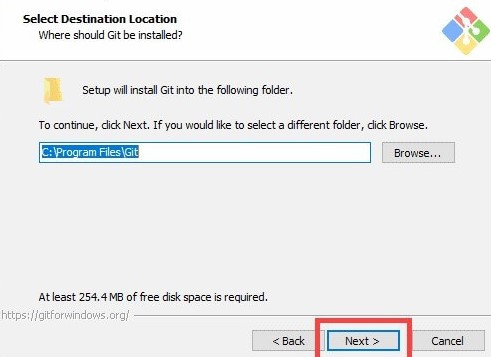
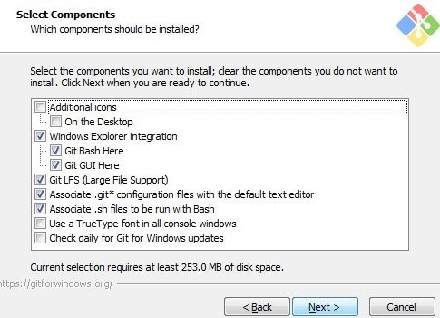
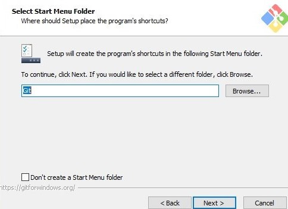
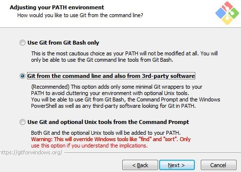
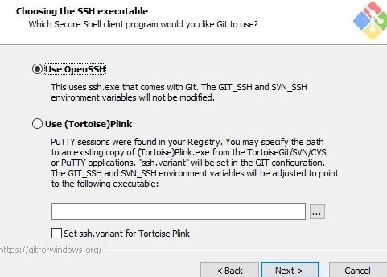
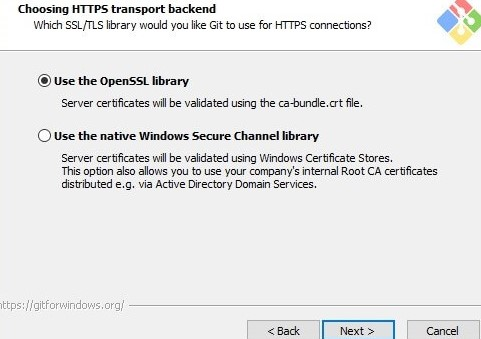
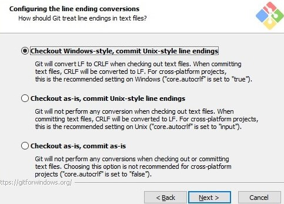
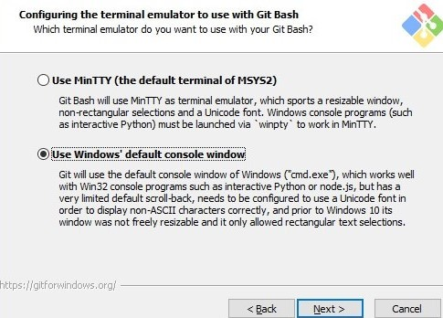
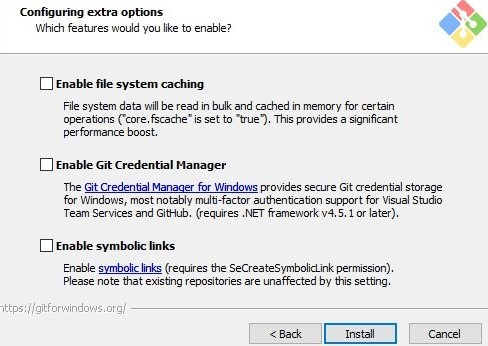

What is Git?
Git is a distributed version-control system for tracking changes in any set of files, originally designed for coordinating work among programmers cooperating on source code during software development.
Download Git for Windows
Step 1
Browse to the official Git website: https://git-scm.com/downloads and click on download link.

Step 2
The installation process is a standard windows installation process. Double click on the downloaded installer file to start the installation process.
Step 3
Now you will be asked to specify the destination folder where Git will be installed. Leave it as default.
Step 4
A component selection screen will appear. Leave the defaults unless you have a specific need to change them and click Next
Step 5
Accept the default and click next to continue. It will place the Git shortcut in the start menu folder so that it will be available from the start menu
Step 6
Select a text editor you like to use with Git.You can accept the default or select from the drop down list. Click Next.
Step 7
Here we choose how we use git from command line. Leave it as it is for windows and click next to continue
Step 8
This allows you to access remote servers using SSH protocol. Leave the default which is Use OpenSSH. But lets not complicate things and click on next to continue.
Step 9
The next option relates to server certificates. Most users should use the default. If you’re working in an Active Directory environment, you may need to switch to Windows Store certificates. Click Next
Step 10
The next selection converts line endings. It is recommended that you leave the default selection. This relates to the way data is formatted and changing this option may cause problems. Click Next.
Step 11
Choose Use Window’s default console window and click Next.
Step 12
Uncheck all the options and click Install to continue
Step 13
When the installation completes, you will see the below screen, click Next to continue.
Connecting to your Remote Repository
Create a new repository in your github accont
Configure your local Git installation to use your GitHub credentials by entering the following:
git config ––global user.name “github_username”git config ––global user.email “email_address”Create a new test directory and change your location to newly created directory
mkdir test_gitcd test_gitInitialize git Repository using below command
git initAdd remote git repository using git URL
git remote add origin https://github.com/findpraveen/test_git.gitAdd files to local repository
git add Readme.mdSwitch to main branch
git branch -M mainNext, commit the changes to the local project
git commit -m "First Commit"Finally, push the changes to the remote GitHub repository
git push -u origin main